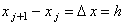

|
2.1. Разностная аппроксимация производной первого порядка
В основе методов численного решения дифференциальных уравнений,
изучаемых в настоящем учебном пособии, лежит преобразование дифференциальной задачи в разностную
задачу, называемое аппроксимацией*. Однако прежде, чем перейти к проблемам аппроксимации
дифференциальных уравнений, рассмотрим аппроксимацию простейших дифференциальных операторов,
т.е. производных первого и второго порядков.
Рассмотрим функцию одной переменной u = u(x),
для которой задан интервал её изменения x [a; b]. Разобьём интервал [a; b] на n равных частей (см. рисунок).
Введём следующие обозначения:
| |
u(xj) = uj - значение функции u(x) в точке xj ;
 - величина интервала между точками.
|
|
Введём понятие нормы функции u(xj) с помощью соотношения:
Рассмотрим производную функции u в точке xj:
Аппроксимация этой производной может быть введена с помощью следующих разностных операторов:
с помощью правой конечной разности
с помощью левой конечной разности
| |
 |
(2.6) |
с помощью центральной конечной разности
Кроме того, разностную аппроксимацию производной первого порядка можно задать в виде линейной комбинации выражений (2.5) и (2.6):
где 0 1.
Видно, что при  = 0 выражение (2.8) становится левой конечной разностью,
при = 1 - правой конечной разностью,
при = 1/2 - центральной конечной разностью. = 0 выражение (2.8) становится левой конечной разностью,
при = 1 - правой конечной разностью,
при = 1/2 - центральной конечной разностью.
|